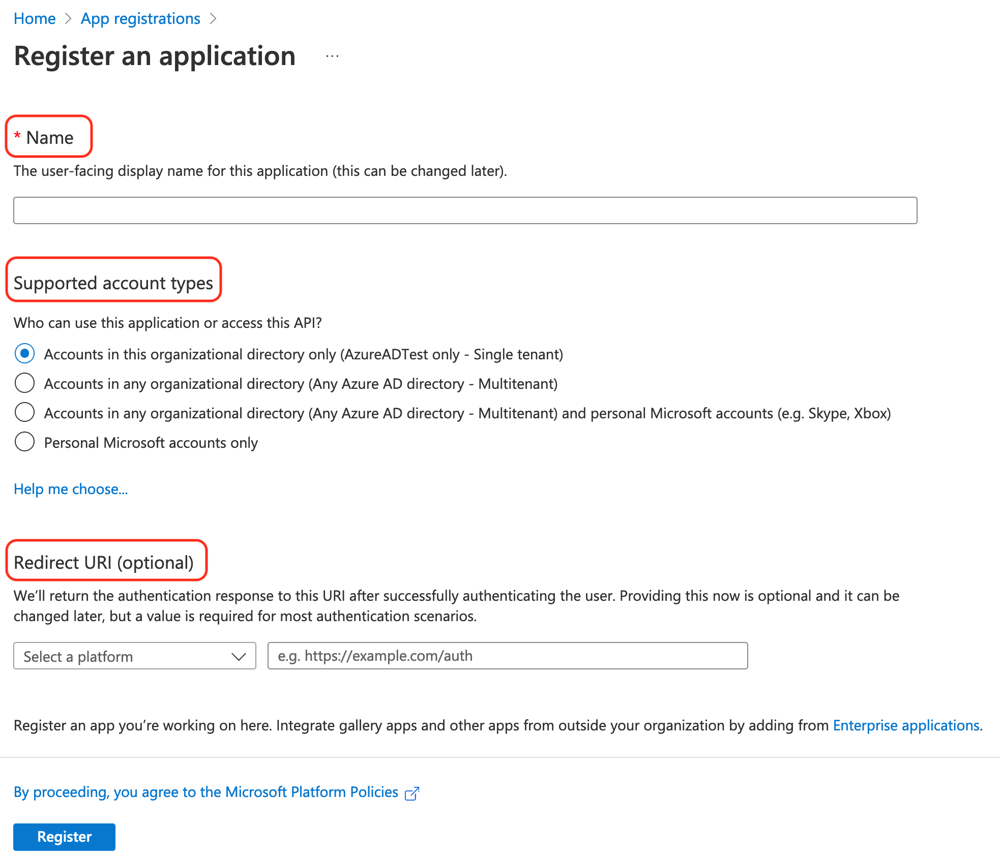
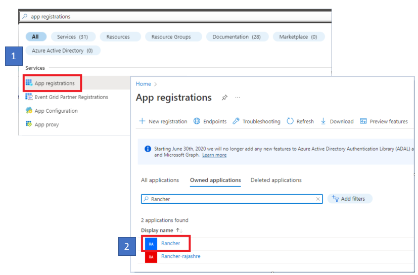
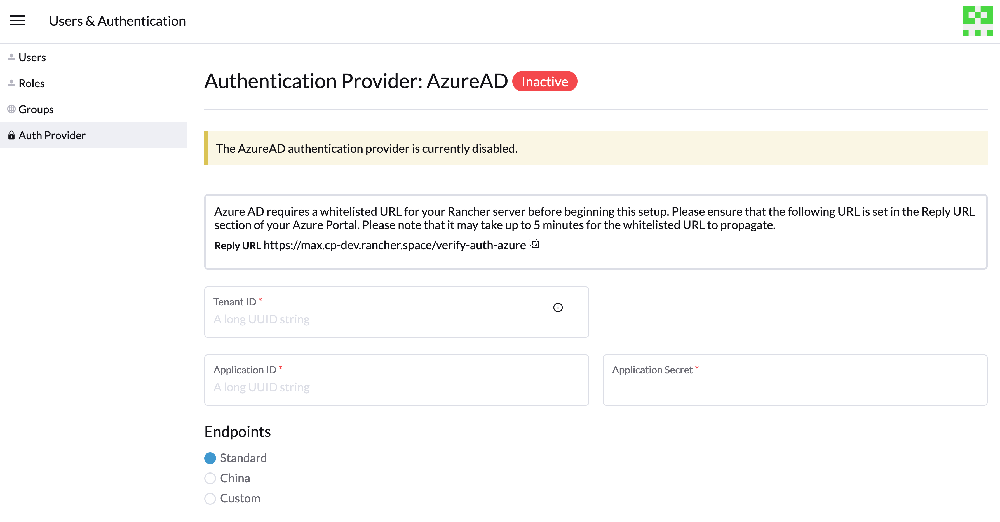

配置 Azure AD
Microsoft Graph API
Rancher 中的 Microsoft Graph API 流程正在不断发展。我们建议您使用最新的 2.7 补丁版本，因为它仍在积极开发中，并将继续接收新功能和改进。
新用户设置
如果您在 Azure 中托管有 Active Directory (AD) 实例，您可以配置 Rancher 以允许您的用户使用其 AD 帐户登录。Azure AD 外部身份验证的配置需要您在 Azure 和 Rancher 中进行配置。
|
注意
|
Azure Active Directory 配置大纲
配置 Rancher 以允许您的用户使用其 Azure AD 帐户进行身份验证涉及多个步骤。在开始之前，请查看下面的大纲。
|
在开始之前，打开两个浏览器标签页：一个用于 Rancher，另一个用于 Azure 门户。这将有助于从门户复制和粘贴配置值到 Rancher。 |
1.在 Azure 中注册 Rancher
在 Rancher 中启用 Azure AD 之前，您必须在 Azure 中注册 Rancher。
-
以管理员用户身份登录 Microsoft Azure。未来步骤中的配置需要管理员访问权限。
-
使用搜索打开 应用注册 服务。
-
点击 新注册 并填写表单。

-
输入一个 名称（类似
Rancher的内容）。 -
在 支持的帐户类型 中，选择“仅限此组织目录中的帐户（仅限 AzureADTest - 单租户）”。这对应于旧版应用注册选项。
在更新后的 Azure 门户中，重定向 URI 与回复 URL 同义。为了在 Rancher 中使用 Azure AD，您必须将 Rancher 列入 Azure 的白名单（之前通过回复 URL 完成）。因此，您必须确保在重定向 URI 中填写您的 Rancher 服务器 URL，并包括以下列出的验证路径。
-
在 重定向 URI 部分，确保从下拉菜单中选择 Web，并在下拉菜单旁边的文本框中输入您的 Rancher 服务器的 URL。此 Rancher 服务器 URL 应附加验证路径：
<MY_RANCHER_URL>/verify-auth-azure。您可以在 Rancher 的 Azure AD 认证页面（全局视图 > 认证 > Web）中找到您的个性化 Azure 重定向 URI（回复 URL）。
-
单击*注册*。
-
|
此更改可能需要最多五分钟才能生效，因此，如果在 Azure AD 配置后无法立即进行身份验证，请不要惊慌。 |
2.创建一个新的客户端机密
从 Azure 门户中创建一个客户端机密。Rancher 将使用此机密与 Azure AD 进行身份验证。
-
使用搜索打开 应用注册 服务。然后打开您在上一个步骤中创建的 Rancher 条目。

-
从导航窗格中，点击 证书和密钥。
-
单击*新客户端机密*。

-
输入一个 描述（类似于
Rancher）。 -
从*到期*下的选项中选择持续时间。此下拉菜单设置机密的到期日期。较短的持续时间更安全，但需要您更频繁地创建新机密。 请注意，如果检测到应用程序机密已过期，用户将无法登录到 Rancher。为避免此问题，请在 Azure 中轮换机密，并在过期之前在 Rancher 中更新它。
-
稍后您将把此机密输入到 Rancher UI 中，作为您的*应用程序机密*。由于您无法在 Azure UI 中再次访问机密值，请在整个设置过程中保持此窗口打开。
3.为Rancher设置所需权限
接下来，在 Azure 中为 Rancher 设置 API 权限。
|
确保您设置应用程序权限，而_不是_委派权限。否则，您将无法登录到 Azure AD。 |
-
在导航窗格中，选择*API权限*。
-
单击*添加权限*。
-
从 Microsoft Graph API 中，选择以下 应用程序权限：
Directory.Read.All
-
返回到导航栏中的*API权限*。从那里，单击*授予管理员权限*。然后单击*是*。应用程序的权限应如下所示：

|
Rancher 不会验证您在 Azure 中授予应用程序的权限。您可以尝试任何您想要的权限，只要它们允许 Rancher 与 AD 用户和组一起工作。 具体来说，Rancher 需要能够执行以下操作的权限：
Rancher 执行这些操作以登录用户或执行用户/组搜索。请记住，权限必须是 以下是满足 Rancher 需求的一些权限组合示例：
|

5.复制Azure应用程序数据


自定义端点：
|
自定义端点未经过 Rancher 测试或完全支持。 |
您还需要手动输入图形、词元和授权端点。
-
从 应用注册，点击 端点：

-
以下端点将是您的 Rancher 端点值。确保使用这些端点的 v1 版本：
-
Microsoft Graph API 端点（图形端点）
-
OAuth 2.0 令牌端点 (v1) (令牌端点)
-
OAuth 2.0 授权端点 (v1) (授权端点)
-
6.在 Rancher 中配置 Azure AD
要完成配置，请在 Rancher UI 中输入有关您的 AD 实例的信息。
-
登录到 Rancher。
-
在左上角，点击 ☰ > 用户与身份验证。
-
在左侧导航菜单中，点击 身份验证提供者。
-
单击 AzureAD。
-
使用您在完成 复制 Azure 应用程序数据 时复制的信息填写 配置 Azure AD 帐户 表单。
Azure AD 帐户将被授予管理员权限，因为其详细信息将映射到 Rancher 本地主体帐户。在继续之前，请确保此权限级别是合适的。
对于标准或中国端点：
下表将您在 Azure 门户中复制的值映射到 Rancher 中的字段：
Rancher 字段 Azure Value 租户 ID
目录 ID
应用程序标识
应用程序标识
应用程序密钥
密钥值
端点
https://login.microsoftonline.com/
对于自定义端点：
下表将您的自定义配置值映射到 Rancher 字段：
Rancher 字段 Azure Value 图形端点
Microsoft Graph API 端点
令牌端点
OAuth 2.0 令牌端点
身份验证端点
OAuth 2.0 授权端点
重要说明：在自定义配置中输入图形端点时，请从 URL 中去除租户 ID：
https://graph.microsoft.com/abb5adde-bee8-4821-8b03-e63efdc7701c -
（可选）在 Rancher v2.9.0 及更高版本中，您可以过滤 Azure AD 中用户的组成员资格，以减少生成的日志数据量。请参见 按 Azure AD 认证组成员资格过滤用户 的第 4—5 步以获取完整说明。
-
单击 启用。
*结果：*已配置 Azure Active Directory 认证。
（可选）使用多个 Rancher 域配置认证
如果您有多个 Rancher 域，则无法通过 Rancher UI 配置多个重定向 URI。Azure AD 配置文件 azuread 默认只允许一个重定向 URI。您必须手动编辑 azuread 以根据需要为其他域设置重定向 URI。如果您不手动编辑 azuread，则在成功登录任何域后，Rancher 会自动将用户重定向到您在 第 1 步中注册应用时设置的 重定向 URI 值。在 Azure 中注册 Rancher。
从 Azure AD Graph API 迁移到 Microsoft Graph API
由于 Azure AD Graph API 已被弃用，并计划于 2023 年 6 月退役，管理员应更新其 Azure AD 应用以在 Rancher 中使用 Microsoft Graph API。 这需要在端点退役之前提前完成。 如果 Rancher 在退役时仍配置为使用 Azure AD Graph API，用户可能无法使用 Azure AD 登录 Rancher。
在 Rancher UI 中更新端点
|
管理员应在承诺进行下面描述的端点迁移之前创建一个 Rancher 备份。 |


隔离的环境
在隔离的环境中，管理员应确保他们的端点已被列入白名单（请参见注册Rancher与Azure的第3.2步的说明），因为图形端点 URL 正在更改。
回滚迁移
如果您需要回滚迁移，请注意以下事项：
|
如果您升级到Rancher v2.7.0+并且已有Azure AD设置，并选择禁用身份验证提供程序，则无法恢复之前的设置。您也无法使用旧流程设置Azure AD。您需要使用新的身份验证流程重新注册。由于Rancher现在使用Graph API，用户需要在Azure门户中设置适当的权限。 |
全局：
| Rancher 字段 | 已弃用的端点 |
|---|---|
身份验证端点 |
https://login.microsoftonline.com/{tenantID}/oauth2/authorize |
端点 |
https://login.microsoftonline.com/ |
图形端点 |
https://graph.windows.net/ |
令牌端点 |
https://login.microsoftonline.com/{tenantID}/oauth2/token |
| Rancher 字段 | 新端点 |
|---|---|
身份验证端点 |
https://login.microsoftonline.com/{tenantID}/oauth2/v2.0/authorize |
端点 |
https://login.microsoftonline.com/ |
图形端点 |
https://graph.microsoft.com |
令牌端点 |
https://login.microsoftonline.com/{tenantID}/oauth2/v2.0/token |
中国：
| Rancher 字段 | 已弃用的端点 |
|---|---|
身份验证端点 |
https://login.chinacloudapi.cn/{tenantID}/oauth2/authorize |
端点 |
https://login.chinacloudapi.cn/ |
图形端点 |
https://graph.chinacloudapi.cn/ |
令牌端点 |
https://login.chinacloudapi.cn/{tenantID}/oauth2/token |
| Rancher 字段 | 新端点 |
|---|---|
身份验证端点 |
https://login.partner.microsoftonline.cn/{tenantID}/oauth2/v2.0/authorize |
端点 |
https://login.partner.microsoftonline.cn/ |
图形端点 |
https://microsoftgraph.chinacloudapi.cn |
令牌端点 |
https://login.partner.microsoftonline.cn/{tenantID}/oauth2/v2.0/token |
按 Azure AD 身份验证组成员资格过滤用户
在 Rancher v2.9.0 及更高版本中，您可以过滤 Azure AD 中的用户组成员资格，以减少生成的日志数据量。如果您在初始设置期间没有过滤组成员资格，您仍然可以在现有的 Azure AD 配置中添加过滤器。
|
过滤掉用户组成员资格不仅仅影响日志记录。 由于过滤器阻止Rancher看到用户属于被排除的组，因此它也看不到该组的任何权限。这意味着从过滤器中排除一个组可能会导致用户被拒绝他们应该拥有的权限。 |
-
在Rancher中，在左上角，点击*☰ > 用户与身份验证*。
-
在左侧导航菜单中，点击 身份验证提供者。
-
单击 AzureAD。
-
点击*按组成员资格限制用户*旁边的复选框。
-
在*组成员资格过滤器*字段中输入 OData过滤子句。例如，如果您想将日志记录限制为名称以`test`开头的组成员资格，请勾选复选框并输入`startswith(displayName,'test')`。

已弃用的Azure AD Graph API
|
Azure AD 角色声明
Rancher 支持 Azure AD OIDC 提供者令牌提供的角色声明，允许将基于角色的访问控制 (RBAC) 完全委托给 Azure AD。之前，Rancher 仅处理 Groups 声明以确定用户的 group 会员资格。此增强功能扩展了逻辑，还包括用户 OIDC 令牌中的角色声明。
通过包含角色声明，管理员可以：
-
在 Azure AD 中定义特定的高级角色。
-
将这些 Azure AD 角色直接绑定到 Rancher 中的项目角色或集群角色。
-
集中并完全委托访问控制决策给外部 OIDC 提供者。
例如，考虑 Azure AD 中的以下角色结构：
| Azure AD 角色名称 | 成员数 |
|---|---|
project-alpha-dev |
用户 A，用户 C |
用户 A 通过 Azure AD 登录 Rancher。OIDC 令牌包含角色声明 [project-alpha-dev]。Rancher 逻辑处理令牌，以及用户 A 的内部 groups/角色 列表，其中包括 project-alpha-dev。管理员创建了一个项目角色绑定，将 Azure AD 角色 project-alpha-dev 映射到项目 Alpha 的项目角色 Dev Member。用户 A 在项目 Alpha 中自动获得 Dev Member 角色。